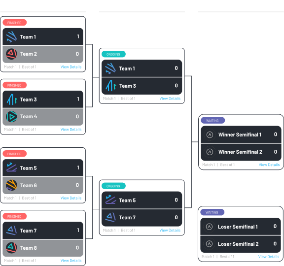

Gamercraft Tournament Rules
Here at Gamercraft, we want to provide the most frictionless, smooth, and premium competitive experiences in the amateur esports scene. We are making it easy for amateur players, teams, and esports organizations to join tournaments, compete, and find new ways of growing and improving.
Our mobile app and tournament platform was designed to allow amateurs to access professionally produced tournaments. Our tournaments are rank and skill adjusted, with ever-evolving anti-smurfing measures, so that you always compete against gamers of your own rank and minimize bad competitive experience. In short, we are not only going the extra mile to stop smurfers and cheaters but also to create a competitive ecosystem where you and your team can thrive and leave your mark.
The Tournaments
For the duration of our Beta stage, most of our tournaments will be short-form (single elimination, 8-team tournaments) with no big time commitments and motivating prize pools. Though there might be some bigger or longer tournaments the typical bracket looks like this:

General Rules
- Participation
- Gamercraft Account
- You must have a valid Gamercraft account and have satisfied all of the conditions needed to sign up for the application.
- You must only play a Gamercraft tournament with your account that best represents your skill level and champion pool.
- Only one tournament at a time
- You are only allowed to compete in one active Gamercraft tournament at the same time. The app will not allow you to sign up for two different tournaments that are at the same time. This rule does not apply to multi-day tournaments if the schedules are different.
- Gamership & Code of Conduct
- Gamership
- We define ‘Gamership’ as the ultimate set of expected virtues (valor, courage, respect, positivity, and fairness) and behaviors all competitive gamers should have.
- We expect all Gamercraft users to behave ethically and kindly towards each other, always exhibiting respect for the game, for the platform, and opponents.
- Our Code of Conduct and Terms of Service applies to all tournaments and interactions within our Discord server and applications. Toxicity will not be tolerated. Depending on the severity of the infraction you may be banned from Gamercraft.
- Anti-Smurfing & Cheating
- A smurf is any player who signs up for Gamercraft on an account that misrepresents their skill level (including champion pool). We want you as a player, not as a smurfer. Any form of cheating or smurfing can result in a permanent ban from Gamercraft.
- At signup, our anti-cheating and skill-ranking algorithms analyze of all your historical gaming statistics to assign an anti-cheat status and place you into a competitive division based on your in-game rank. Only players with the Verified status are allowed to compete in our tournaments.
- All gamers are required to comply with our GID (Gaming ID) verification in order to register and join Gamercraft. Each Gamercraft account will be linked to a phone number, an email address, a League of Legends account, and a Discord account. This federated network of ID’s are the first barrier of our anti-smurfing efforts.
- Prizes
- Prizes may include Cash, Amazon Gift Cards, Cryptocurrencies, or Gamercraft Credits.
- In order to receive prizes with monetary value, your identity must be verified and all of our compliance standards must be satisfied.
- Prizes are void if no matches are played or in the event of a disqualification.
- Offenses and Consequences
- All offenses have consequences, including being permanently banned from Gamercraft. In the next app version, every gamer will be able to see their penalty status in their settings page. Consequences will be issued for:
- Offensive or Vulgar Language
- Hate Speech / Discriminatory Language
- Bullying / Threatening / Harassment
- Sexual Harassment
- Spamming
- Violence / Threats of Violence / Self-Destructive Behavior
- IP Flooding
- Buying or Selling Gamercraft Property
- Hijacking of Gamercraft Accounts
- Unauthorized Sharing of Private Information
- Account and Team Personalization
- Regional Rule Violation
- Evading a Ban
- Account Sharing
- Tournament Non-Attendance
- Exploiting Bugs / Glitches / Hacks
- Smurfing
- Griefing
- Feeding
- Throwing
- Fake Proof
- Impersonation
League of Legends Rules
These rules and guidelines have been adapted to the tournament experiences within Gamercraft and imply the use of the mobile application
- Joining the Match Lobby
- All teams must use the provided tournament code.
- Teams will have 15 minutes after the match start time to join the lobby. Failure to do so will result in a forfeit.
- Starting the game 15 minutes after the match code has been generated will result in a forfeit or double forfeit). The FF will be issued to the team with a complete roster in the lobby.
- Teams have up to 15 minutes to join the following games and brackets after the codes and notifications have been issued.
- Randomized Side Selection
- In BO1, Map Sides and pick priority (Blue/1st or Red/2nd) are randomly assigned every game. Teams must adhere to the assigned sides or face disqualification or an ungamerlike warning.
- In BO3, Map side and pick priority is randomly selected for the first game. After that point, the team that got the red side in the first game will get the blue side for Game 2.
- In the event that a team has side selection for a game, but is not the first team to enter the lobby, the opponent should move to the red side until they arrive. Not respecting this rule will result in a disqualification.
- Substitutions
- Substitutions after registering for a tournament are not allowed. In order to change the roster, the team captain needs to leave the tournament and join back.
- Rosters may be edited up until 10 minutes before the tournament start time.
- Substitutions are not allowed once the game has started and the match code has been generated. A substitution once the game lobby has been created will result in immediate disqualification as our algorithms check lobby participants. Same applies to substitions between matches.
- Spectators
- Spectators are not allowed in the match lobbies unless explicitly approved by Gamercraft.
- Streaming matches is allowed and encouraged. We recommend a minumum of a three minute delay. Gamercraft is not responsible for instances of stream sniping.
- Gamercraft Tier System
- Tiers are automatically assigned at account creation and after a succesful anti-cheating review by our app. Our Tiers do not replace League of Legends rank. In fact, we use ranks as one of the main parameters to draft players into the specific tier leagues.
- Gamercraft's Tier System has 8 specific tiers designed to account for the different skill ranges within the game's player distribution to create more competitive experiences to Gold, Silver, and Bronze players which account for the majority of the players base. Our eight tiers are:
- Elder, Baron, Herald, Infernal, Sentinel, Krugs, Wolves, Poro
- In order to participate in a specific tournaments, you must meet the tier eligibility criteria.
- Smurfing
- Smurfing is prohibited here at Gamercraft and it does not stay there. We are proactive about catching smurfers. We conduct reviews at the moment of signup and before and after every tournament.
- Smurf Patrol: The Smurf Patrol is an internal compliance department whose primary job is to identify and purge smurfers from our platform. The final decisions of the Smurf Patrollers will be binding and may be appealed.
- Smurf Patrol Authority: Smurf Patrollers will have access to all match codes and can spectate any match at their own discretion. A player can only be flagged for smurfing once significant evidence has been presented and a majority consensus has been reached (by all Smurf Patrollers).
- Reported smurfers have the right to appeal to Gamercraft’s and the Smurf Patrol’s decision.
- Forfeit & Double Forfeit
- A Forfeit (FF) is when the entire team fails to show up to the game lobby within the time frames established in Rule #1. This automatically grants the other team a win.
- Since our algorithms check which Summoner Names are in the lobby, a forfeit can also happen if a team is missing one player or substituted a player not registered in the Gamercraft app.
- A Double Forfeit (DFF) occurs when both of the teams fail to show up to the game lobby. The winner of the other match will automatically get a win in the following bracket or round.
- A DFF can also occur if both teams have the wrong players in the match lobby or have made unauthorized substitutions.
- LCS Order & ProDraft
- In the current competitive environment, LCS Order & ProDraft are not mandatory and are courtesy. However, if one team proposes LCS Order or ProDraft, the other team may or may not accede to it. Gamercraft encourages all teams and players to maintain the principle of Gamership at all times.
- In-Game Pauses
- Each team can pause the game for a maximum, cumulative amount of 5 minutes. A game can be paused by typing: /pause in the in-game chat. In extreme cases of technical difficulties, the pauses can go beyond this threshold if both parties agree. Exceeding the 5 minute mark without a valid reason will result in a disqualification.
- Live Tournament Support
- Gamercraft is committed to providing the industry’s best and most responsive support to all of our competitors. Our promise to you is that we will address all concerns within 60 to 120 seconds of receiving it while a tournament is active. While we will go the extra mile to solve and address all of your issues and requests, there are a few areas where Gamercraft has no control over and cannot provide support.
- You should contact Riot Games if: your problem cannot be fixed by Gamercraft or the tournament admin, if you have questions about an in-game or client glitch and/or bug.
- For all other questions, please open a support ticket in the Gamercraft's official Discord server.
- Disconnections
- If a player disconnects during Champ select, a team has 5 minutes to reconnect and the same picks and bans must be fulfilled. Failure to do so will result in a forfeit.
- If a player disconnects during the game, a team has 5 minutes of pause time for the player to reconnect. If the player is unable to reconnect within the 5 minutes, the game must be continued.
- The player that disconnected can join back in the game even after the 5 minutes of pause time has passed.
Right to Modify Rules
- Gamercraft, Inc. reserves the right to modify these rules at will. Tournament administrators and referees will be required to adhere to these rules without exemption.
Term Definition Sheet
Single Elimination
A type of tournament where teams are eliminated after one loss. The winners of the matches advance until the final, where only one team can win.
Double Elimination
A type of tournament where teams are eliminated after two losses. The tournament has two brackets: one for the winners (undefeated) and one for losers (the teams with one loss). This tournament has a grand final where the winners of both brackets face each other.
League
A League is a competitive structure where all participating teams face each other at least once (or twice). Every match gives the winner a predetermined amount of points, thus creating the standing and ranking tables.
Brackets
A bracket is the stage or stages, depending on the format, of a tournament. For instance, one might refer to the Semifinal Bracket and that includes the two semifinal matches. Brackets are connected with other brackets and make up the tournament tree.
Match
A match is when teams face-off in a specific tournament stage (Quarterfinals, Semifinals, Final). A match may be composed of one (1), three (3), or five (5) games.
Game
A game is a subset, a component, of a match where teams face each other and have their own scores.
Best of X (BoX)
In the Gamercraft app, the BO1, BO3, BO5 acronyms mean Best of X. The X determines the number of games in a match. A Best of 3 (BO3) match has 3 games where a team needs to win at least 2 games to advance.
Smurfing
Smurfing is when a highly-skilled player creates a secondary account as a disguise to play against less proficient opponents. To clarify, smurfing is prohibited in Gamercraft. (Credit to Inverse.com)
Offense Definition Sheet
Offensive or Vulgar Language
Crude or off putting language which may cause others to feel uncomfortable
Hate Speech / Discriminatory Language
- Using direct or indirect language (including, using racial, ethnic, religious or other slurs), or engaging in any conduct that promotes, encourages or facilitates discrimination, denigration, objectification, harassment or violence based on any of the following:
- Gender, race, color, nationality, national or ethnic origin, ancestry, citizenship status, age, religion, creed, belief, political or trade union affiliation, military or veteran status, sexual orientation, marital or civil partnership status, pregnancy or maternity, physical or mental disability, medical condition, gender identity, gender reassignment, or any other basis protected by applicable law
Bullying / Threatening / Harassment
Targeted or direct language and behavior which is intended to intimidate or hurt others
Sexual Harassment
- Using direct or indirect language, or any other form of communication or conduct, that insults, demeans, or promotes violence towards someone because of their gender, gender identity, sexual orientation, or for any other reason
- Linking to websites or images that are sexual in nature or offensive to a person
- Making jokes or comments of a sexual nature toward any person or group
- Can include, but not limited to, using direct or indirect language, or any form of communication or conduct that is sexual in nature
- Can be directed at any person, regardless of their gender, gender identity, or expression or sexual orientation
Spamming
Repeated user inputs of any type meant to disrupt communication, gameplay or operations
Violence / Threats of Violence / Self-Destructive Behavior
Threatening or attempting violence towards anyone for any reason at any time, including, but not limited to:
- Using weapons to threaten, intimidate or harm others
- Referring to violence in any capacity, whether directly or indirectly
- Threatening or attempting to self-harm
IP Flooding
Performing a DoS (Denial of Service) attack that aims to disrupt the normal function of a device and prohibit it from sending requests or processing information
Buying or Selling Gamercraft Property
Includes but not limited to accounts, teams, etc.
Hijacking of Gamercraft Accounts
Hacking other players accounts
Unauthorized Sharing of Private Information
- Invading the privacy of others
- Sharing content that may reveal personal information about individuals
- Requesting any personal information from players including:
- Names, email address, phone number, physical address, billing information, financial information, passwords, codes for digital content, or any other information that could identify an individual
Account and Team Personalization
- Includes, but not limited to:
- Account names, team names, profile pictures, team pictures, banners, profile information / bios
- Personalization must be appropriate and abide by all Terms of Service and Code of Conduct
Regional Rule Violation
Participating in tournaments from a banned state
Rank Violation
Participating in tournaments outside of the specified rank specified and intended
Evading a Ban
Participating while evading an active ban
Sharing Accounts
Multiple users having access and / or playing on a single account
Exploiting Bugs / Glitches / Hacks
Using or sharing a glitch / exploit or any method of getting an unfair advantage in a match
Smurfing
Using a secondary account as a disguise to play against less proficient opponents
Tournament Non-Attendance
Repeatedly joining tournaments and failure to show up
Griefing
- Ruining the gaming experience of another player, either involuntarily or on purpose
- Deliberately irritating and harassing players within a game
- Using aspects of the game in unintended ways to annoy other players
Feeding
Being killed repeatedly to assist the opposing team
Throwing
Deliberately sabotage your team’s ability to win by intentionally playing poorly or engaging in such actions which will ensure a loss
Fake Proof
Creating and using fake proof as an attempt to receive a win and/or advantage
Impersonation
- The act of attempting to deceive someone by pretending that you are another person
- Using somebody else’s ID to claim rewards